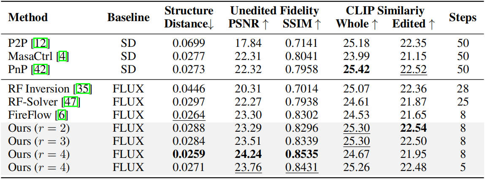

Runge-Kutta Approximation and Decoupled Attention
for Rectified Flow Inversion and Semantic Editing
Weiming Chen1
Zhihan Zhu1
Yijia Wang1
Zhihai He1,2
1 Southern University of Science and Technology, 2 Pengcheng Laboratory
[OpenReview]
Conceptual illustration of our text-guided semantic editing framework. We propose an efficient high-order inversion method for rectified flow models based on the Runge-Kutta solver of differential equations. We introduce Decoupled Diffusion Transformer Attention (DDTA), a novel mechanism that disentangles text and image attention inside the multimodal diffusion transformers, enabling more precise semantic control.
Abstract
Rectified flow (RF) models have recently demonstrated superior generative performance compared to DDIM-based diffusion models. However, in real-world applications, they suffer from two major challenges: (1) low inversion accuracy that hinders the consistency with the source image, and (2) entangled multimodal attention in diffusion transformers, which hinders precise attention control. To address the first challenge, we propose an efficient high-order inversion method for rectified flow models based on the Runge-Kutta solver of differential equations. To tackle the second challenge, we introduce Decoupled Diffusion Transformer Attention (DDTA), a novel mechanism that disentangles text and image attention inside the multimodal diffusion transformers, enabling more precise semantic control. Extensive experiments on image reconstruction and text-guided editing tasks demonstrate that our method achieves state-of-the-art performance in terms of fidelity and editability.
Unique Contributions
- We incorporate the Runge-Kutta method into the RF sampling process to perform high-order modeling of the differential trajectory, and propose a high-fidelity inversion method that better aligns the inversion and denoising paths.
- We introduce a decoupled attention mechanism that decouples the entangled text and image attention in MM-DiTs, thereby enabling precise semantic editing in MM-DiT architectures.
- Extensive experimental results on benchmark datasets demonstrate that our method achieves superior performance on both reconstruction and text-guided semantic editing tasks.
Runge-Kutta Solver (RK Solver)
Given a known state $Z_{t_{t-1}}$, an $r$-order of explicit RK solver builds a series of intermediate slopes $\left \{ K_{1}^{i}, \dots, K_{r}^{i} \right \}$: $$K_{s}^{i} = v_{\theta} \left ( Z_{t_{i-1}} + \Delta t_{i} \sum_{j=1}^{s-1} {a_{sj} K_{j}^{i}}, t_{i-1} + c_{s} \Delta t_{i}, \mathcal{P} \right ),$$ where $\Delta t_{i} = t_{i} - t_{i-1}$ denotes the step size of adjacent states. Then, the next state $Z_{t_{i}}$ can be computed by: $$Z_{t_{i}} = Z_{t_{i-1}} + \Delta t_{i} \sum_{j=1}^{r} {b_{j} K_{j}^{i}} \,\, .$$ The lower triangular matrix $\textbf{A} = \left [ a_{mn} \right ]$ together with the vectors $\textbf{b}^{T}$ and $\textbf{c}$, constitute a Butcher tableau that governs a specific RK method: $$\renewcommand\arraystretch{1.5} \textbf{B} = \begin{array}{c|c} \textbf{c} & \textbf{A} \\ \hline & \textbf{b}^{T} \end{array} \,\,\, .$$ The denoising process of the RK solver has a symmetrical formulation, i.e., $$K_{s}^{i} = v_{\theta} \left ( Z_{t_{i}} - \Delta {t_{i}} \sum_{j=1}^{s-1} {a_{sj} K_{j}^{i}}, t_{i} - c_{s} \Delta t_{i}, \mathcal{P} \right ),$$ $$Z_{t_{i-1}} = Z_{t_{i}} - \Delta t_{i} \sum_{j=1}^{r} {b_{j} K_{j}^{i}} \,\, .$$ Empirically, the RK solver should adopt the same order for both the inversion and denoising processes.
Decoupled Diffusion Transformer Attention (DDTA)
Our DDTA decouples the entangled text-image attention by dividing the attention map of DiT block into four regions based on the dimension of hidden states, i.e., $[M_{CC}, M_{CI}, M_{IC}, M_{II}]$. Here, $M_{CC}$ and $M_{II}$ correspond to the self-attention maps of the condition and image, while $M_{CI}$ and $M_{IC}$ represent the cross-attention maps between condition and image. Our DDTA preserves the decoupled attention features from the inversion branch and reuses them in the editing branch to improve the faithfulness of the edited image.

Image Reconstruction Results
We comprehensively assess the reconstruction performance of our RK solver on the first 1,000 images from the Densely Captioned Images (DCI) dataset. The results presented in the table below demonstrate that our method outperforms all existing approaches across all evaluation metrics.
We report the results based on the best-performing configurations, using Heun’s second-order, Kutta’s third-order, and the 3/8-rule fourth-order variants, whose corresponding Butcher tableaus are as follows: $$\renewcommand\arraystretch{1.3}
\textbf{B}_{r=2} = \, \begin{array}{c|cc}
0 & 0 & 0 \\
1 & 1 & 0 \\ \hline
& \frac{1}{2} & \frac{1}{2}
\end{array}, \quad
\textbf{B}_{r=3} = \, \begin{array}{c|ccc}
0 & 0 & 0 & 0 \\
\frac{1}{2} & \frac{1}{2} & 0 & 0 \\
1 & -1 & 2 & 0 \\ \hline
& \frac{1}{6} & \frac{2}{3} & \frac{1}{6}
\end{array}, \quad
\textbf{B}_{r=4} = \, \begin{array}{c|cccc}
0 & 0 & 0 & 0 & 0 \\
\frac{1}{3} & \frac{1}{3} & 0 & 0 & 0 \\
\frac{2}{3} & -\frac{1}{3} & 1 & 0 & 0 \\
1 & 1 & -1 & 1 & 0 \\ \hline
& \frac{1}{8} & \frac{3}{8} & \frac{3}{8} & \frac{1}{8}
\end{array}
\, \, .$$
Text-Guided Semantic Editing Results
Quantitative Results
We conduct a comprehensive quantitative comparison on the PIE-bench dataset across various methods, including both DDIM-based and RF-based methods, using SDv1.5 and FLUX.1-dev as their respective baselines. The results shown in the table below support three conclusions: (1) Our method outperforms all baselines in content consistency, with our fourth-order variant achieving the highest PSNR, SSIM, and structure distance. (2) Our method demonstrates competitive editability (closely trailing the best result) while maintaining substantially higher fidelity, highlighting a more favorable trade-off between fidelity and editability. (3) Our method achieves the best overall performance with significantly fewer sampling steps, indicating the superior efficiency of our method.

User Study
To further evaluate the effectiveness of our proposed method, we employ MLLMs to assess the quality of edited images based on both editing performance and consistency with the source image. This evaluation is performed on the entire PIE-Bench dataset, where for each image, the MLLMs are tasked with selecting the best-edited result among all compared methods. We report the proportion of selections for each method across the dataset. The result shown in the table below indicate that our proposed method is selected significantly more often than all comparisons, demonstrating its superior editing quality and faithfulness.
Qualitative Results
We present qualitative results demonstrating the effectiveness of our method across diverse editing types, including both object and attribute manipulations. While minor unintended background changes may occur, our method consistently outperforms existing baselines in terms of semantic alignment with target prompts and structural consistency with source images, highlighting its robustness and versatility in the text-guided semantic editing task.
BibTex
@inproceedings{rout2025semantic,
title={Semantic Image Inversion and Editing using Rectified Stochastic Differential Equations},
author={Rout, L and Chen, Y and Ruiz, N and Caramanis, C and Shakkottai, S and Chu, W},
booktitle={The Thirteenth International Conference on Learning Representations},
year={2025}
url={https://openreview.net/forum?id=Hu0FSOSEyS}
}
Acknowledgements:
This work is supported by the National Natural Science Foundation of China (No. 62331014) and Project 2021JC02X103. We acknowledge the computational support of the Center for Computational Science and Engineering at Southern University of Science and Technology.